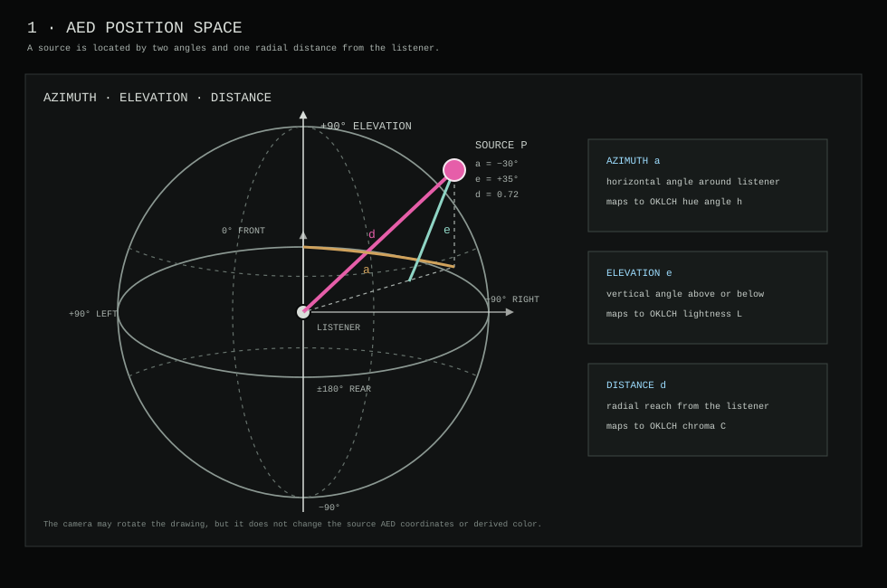
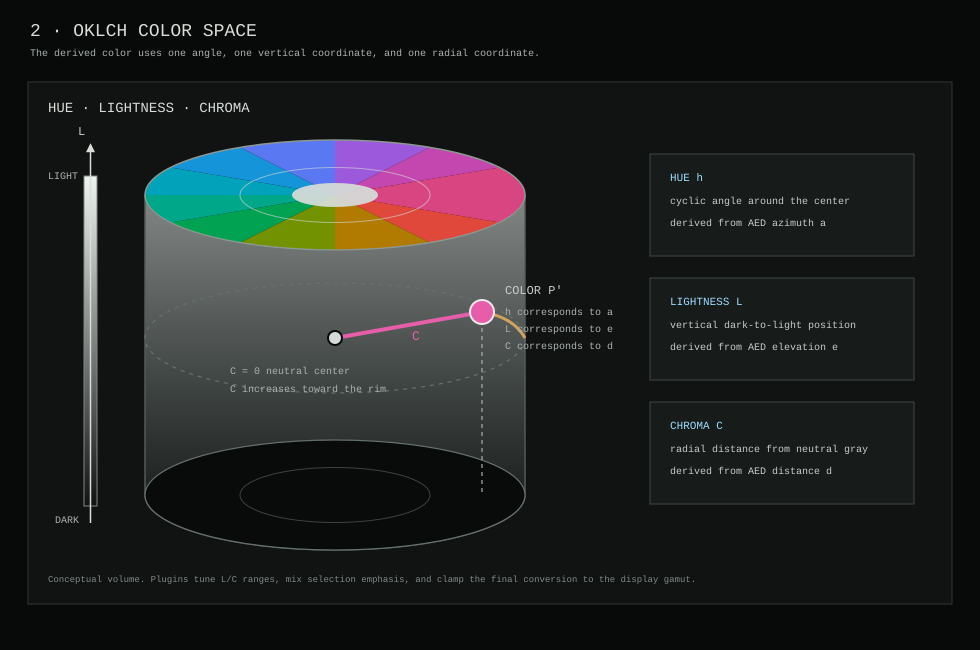

Interpreting Color
Most s3g-dsp editors stay grayscale until color can carry information. Color does not have one package-wide meaning, however. A spatial field, group display, meter, and topology heatmap use different color grammars. In spatial views, AED means azimuth, elevation, and distance.
Read the view before the hue. Red can mean a source near front azimuth in an AED field, but a very high peak in a meter. A yellow Parameter Surface cell identifies one captured state; it does not mean a medium-high value.
Reading the Context
| Display context | Color answers | First cues to check |
|---|---|---|
| Shared-AED point or speaker field | Where is it in AED? | Hue, lightness, and chroma together; then the numerical AED controls. |
| Sources, clouds, roles, or cells | Which set does it belong to? | Repeated color, point ID, role label, or enclosing region. |
| Meter, response map, or heatmap | How much is present here? | The local low-to-high scale and whether it measures audio or a control field. |
| Overlay, route, or selection state | What method or state is active? | Line style, outline, label, brightness, and opacity. |
This guide concerns display color. A parameter named COLOR, TONE, SKIN, or PALETTE may shape sound or procedural geometry instead; its plugin page is authoritative.
AED and OKLCH-derived Color
The common point and speaker mapping derives color from azimuth, elevation, and distance with an OKLCH-derived model. The three visible color dimensions have separate jobs:
- Hue follows azimuth. Moving around the listener turns around the color wheel. The hue does not change when the camera rotates.
- Lightness follows elevation. Lower points are darker; upper points are lighter.
- Chroma follows distance. Nearer points are more restrained or gray; farther points are more saturated.


0°
front · red/pink origin
+90°
left · yellow/ochre
±180°
rear · green/cyan
-90°
right · blue/violet
The named hue families are approximate. Elevation, distance, gamut limits, selection mixing, and the display itself all change the final pixel. Read a point comparatively and use the numerical coordinates for exact placement.
The full three-part mapping is used, with small per-plugin range adjustments, by the Ambi Point Encoder, direct panners, speaker, object, and adaptive decoder fields, Stochastic Encoder, VOT Encoder, Vox Encoder, and Ambi Effect Displacement. Path control points in the Path Encoder also use it. Ambi Imprint uses azimuth for hue and elevation for lightness but keeps chroma fixed, so its point color does not report distance.
Point position remains the primary spatial cue. Color lets a direction stay recognizable when points cross in projection or when a camera view makes depth harder to read.
Identity and Grouping
When several objects keep a color while moving, color usually identifies membership rather than position or level.
| Plugin or view | What the color identifies | What not to infer |
|---|---|---|
| Cloud Encoder | The small source markers use one of four fixed colors for their assigned cloud. Numbered cloud centers stay neutral. | Do not read source hue as azimuth or level. |
| Path Encoder and Surface Terrain | A repeating vivid palette identifies source lanes and helps track them along paths. Path control-point color can separately carry AED. | The lane palette is not a distance or magnitude scale. |
| Vox Encoder | Point fill carries AED; the muted outer frame, role label, and faint links identify ensemble cohorts such as SATB, chorus, or round groups. | The role frame does not replace the point's spatial color. |
| Parameter Surface | Each Voronoi cell receives a stable, distinct color by cell index. Halos and opacity show selection and influence. | Hue does not describe the preset's timbre, value, or position in an ordered scale. |
| Ray Bilocation Encoder | Cyan identifies field/source A and amber identifies field/source B; opacity follows their current presence. | The pair colors do not encode AED. |
| Wave Terrain Encoder | White marks active reading contours; faint cyan and magenta distinguish the selected voice's current and next regions. | These are transition roles, not spatial coordinates. |
Several procedural encoders use a spatially related but different field palette. Wind, Water, Pyrosphere, Cryosphere, Wrangler, and Pulsar use an HSV-derived hue that broadly follows azimuth with a different hue origin. Positive elevation increases brightness, while event, activity, mask, selection, and surface membership affect opacity or emphasis. Do not infer distance from saturation in these views. Insect is a further exception: hue identifies the sound-production method, while elevation can still affect brightness.
Magnitude and Energy
The shared heat scale runs from deep blue through cyan, yellow, and orange to red. Within one view it means low to high, but the measured quantity depends on the view.
- The topology heatmap shows normalized point-field influence and geometry. It is explicitly not an audio level meter.
- The Multichannel Meter
HEATpage shows channel energy over time. ItsFIELDpage instead uses a VU-style dark-green to red scale, and marker size also follows loudness. - The Speaker Decoder
MAPpage shows each speaker's response to the selected-speaker probe direction. Values are normalized to the strongest response in that map; they are not absolute SPL. The ordinaryFIELDpage returns to AED color. - The Ambi Energy Visualizer uses the selected ordered palette for reconstructed field energy. Its inverse-color wake is recent receding energy, not negative energy. Changing
MAPchanges only the display.
Magnitude maps are comparative displays. A hotter area is stronger within the current view and normalization; it is not automatically a calibrated level or a directly comparable value from another plugin.
State, Routes, and Emphasis
- Selection usually adds a light outline, brightness, opacity, or size. Treat that as focus, not an increased parameter value.
- In Group Matrix plugins, gray is the manual crosspoint ceiling and green is the live animated pattern inside that ceiling. In Node Mixer views, green marks the cursor and nodes currently reached by its influence.
- In direct panners, faint cyan lines identify the LBAP solver topology and faint yellow lines identify VBAP. Imaginary support points share the overlay role and do not create output channels.
- In the Head Decoder's transaural view, muted green lines show the direct speaker-to-ear paths and orange dashed curves show opposite-ear cancellation paths. Their thickness and opacity follow the corresponding amount.
- In physics and ecology fields, a brighter outline, link, or halo can show collision, event, phrase, gust, or activity energy. Point size and labels remain separate cues; consult the plugin page before treating emphasis as gain.
Reading Without Color Alone
Use color as a fast secondary cue. Point IDs, group or role labels, line styles, outlines, marker geometry, positions, meters, and numerical controls provide the more reliable reading when hues are difficult to distinguish or a display changes their appearance.
For spatial work, the AED readout is authoritative. For metering, use the displayed level and peak cues. For grouping, follow the ID or role label. If a color changes after selecting an item, first assume selection emphasis unless the view's legend says that brightness or opacity carries a live quantity.